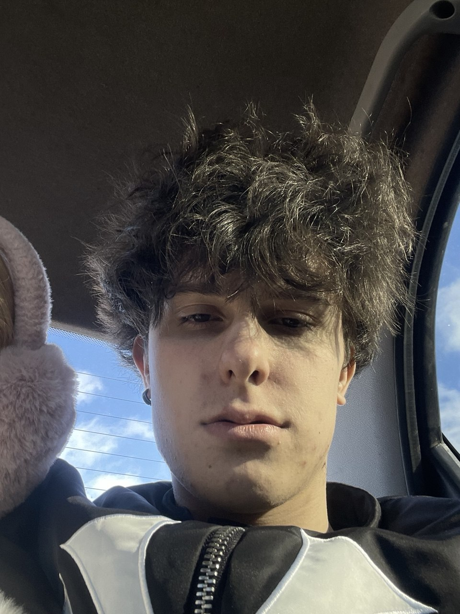

O mne
Som študentom Technickej univerzity v Košiciach (TUKE), kde študujem odbor Komerčná logistika.
Vo voľnom čase sa venujem hudbe a futbalu. Tieto záľuby sú dôležitou súčasťou môjho života. Hudba mi prináša inšpiráciu a futbal radosť z pohybu a športu.
Rád spoznávam nové veci, získavam skúsenosti a pracujem na svojom osobnom rozvoji.